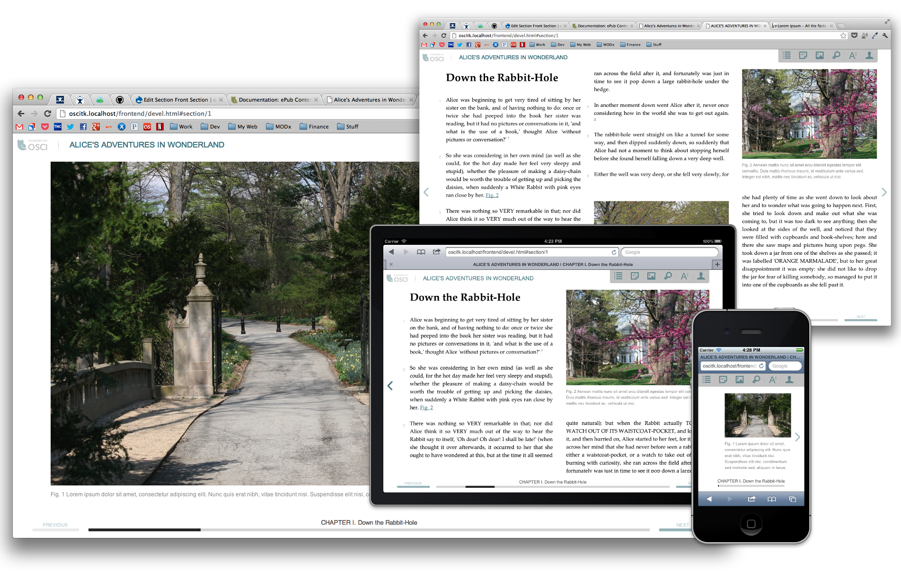

Osci Toolkit
An authoring and publishing environment for online catalogues with full scholarly apparatus
History the OSCI Toolkit Learn more about the Toolkit
Toolkit Architecture How all the pieces fit together
Tutorials Build your knowledge
Catalogues & Publications OSCI Toolkit in the wild
Research & Resources Articles, presentations, etc.
Source Code on GitHub IMAmuseum/OSCI-Toolkit
Demo Site
The site http://demo.oscitoolkit.org is available for you to try out the tool. Your edits will be removed after the nightly (4 AM ET) rebuild.
Digital Publishing Slack
Join the Art & Museum Digital Publishing Interest Group on Slack to connect with other institutions interested in digital publishing.
OSCI Toolkit
The OSCI Toolkit was an open-source project of the Indianapolis Museum of Art (IMA) to create a suite of tools that facilitates the publishing and broad dissemination of online scholarly catalogues for art history.
The toolkit was generously funded by the Getty Foundation as part of its eight-year Online Scholarly Catalogue Initiative (OSCI), which aimed to create replicable models for museum collection catalogues in the online environment. It was used to create a number of websites and digital publications, most notably the Art Institute of Chicago's Online Scholarly Catalogues. With the conclusion of the initiative in 2017, OSCI Toolkit is no longer actively supported.
We invite you to explore the history of the toolkit and the broader initiative, check out the source code on GitHub, and join the Art & Museum Digital Publishing Interest Group on Slack to discuss projects and techniques.